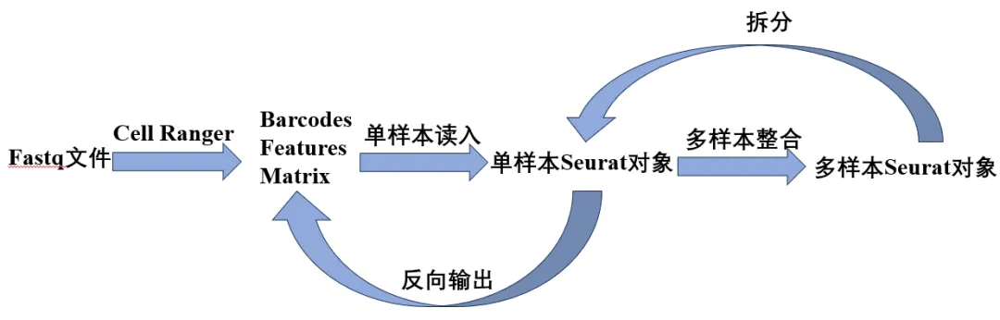
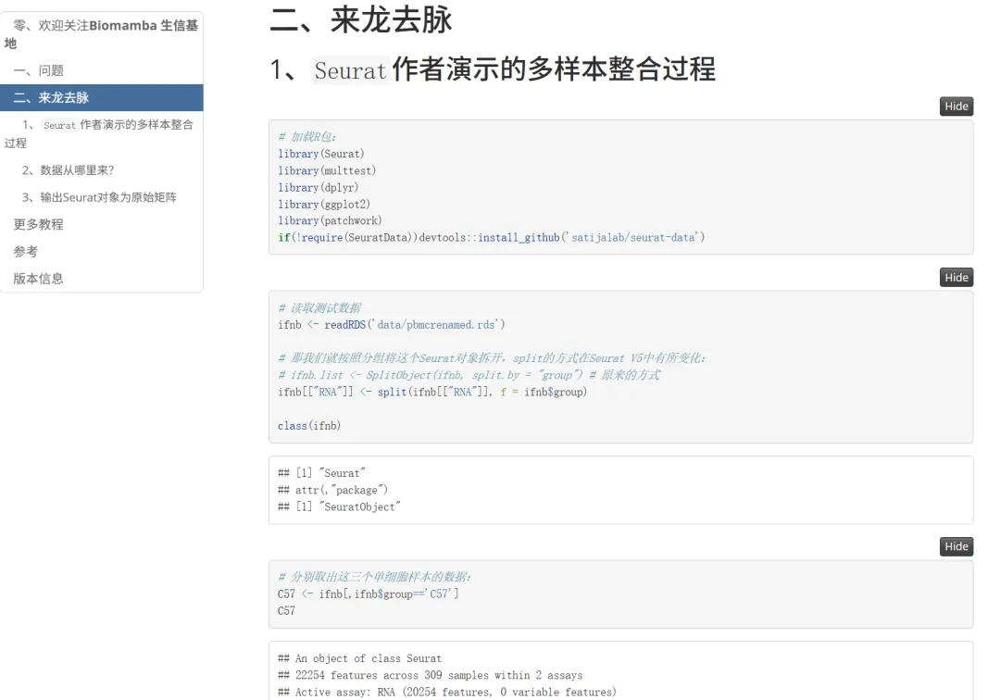

怎么就不会合并单细胞数据了呢
原文：https://mp.weixin.qq.com/s?__biz=MzAwMzIzOTk5OQ==&mid=2247529812&idx=1&sn=cb6b4244cafe8fa0575c07f106e78ff6&chksm=9b3c0c04ac4b8512e69a1b430464eb920563486e10e689384ee03aeab528f6c68d267cc0d0a3#rd 合集：答读者问
一、写在前面
如下图，总是有同学在观看我们多样本整合[1]时不能理解为何我们拿一个已经整合好的样本拆分后再合并。其实也不是我们故意给大家使绊子，Seurat官网[2]也是这么操作的。Biomamba第一次看的时候也绕晕了，不过细品之下才了解了作者的良苦用心。既然这样，我们本篇推送就带大家完完全全地梳理一下单样本数据读取与多样本整合之间的衔接。
[1]https://www.bilibili.com/video/BV1S44y1b76Z?vd_source=6335356a0d3631ad476b7c7de83892db&p=5
[2]https://satijalab.org/seurat/articles/integration_introduction
二、来龙去脉
1、Seurat作者演示的多样本整合过程
# 加载R包：
library(Seurat)
library(multtest)
library(dplyr)
library(ggplot2)
library(patchwork)
if(!require(SeuratData))devtools::install_github('satijalab/seurat-data')
# 读取测试数据
ifnb <-readRDS('data/pbmcrenamed.rds')
# 那我们就按照分组将这个Seurat对象拆开，split的方式在Seurat V5中有所变化：
# ifnb.list <- SplitObject(ifnb, split.by = "group") # 原来的方式
ifnb[["RNA"]] <-split(ifnb[["RNA"]], f = ifnb$group)
class(ifnb)
## [1] "Seurat"
## attr(,"package")
## [1] "SeuratObject"
# 分别取出这三个单细胞样本的数据：
C57 <- ifnb[,ifnb$group=='C57']
C57
## An object of class Seurat
## 22254 features across 309 samples within 2 assays
## Active assay: RNA (20254 features, 0 variable features)
## 2 layers present: counts.C57, data.C57
## 1 other assay present: integrated
## 3 dimensional reductions calculated: pca, umap, tsne
AS1 <- ifnb[,ifnb$group=='AS1']
AS1
## An object of class Seurat
## 22254 features across 287 samples within 2 assays
## Active assay: RNA (20254 features, 0 variable features)
## 2 layers present: counts.AS1, data.AS1
## 1 other assay present: integrated
## 3 dimensional reductions calculated: pca, umap, tsne
P3 <- ifnb[,ifnb$group=='P3']
P3
## An object of class Seurat
## 22254 features across 304 samples within 2 assays
## Active assay: RNA (20254 features, 0 variable features)
## 2 layers present: counts.P3, data.P3
## 1 other assay present: integrated
## 3 dimensional reductions calculated: pca, umap, tsne
# 简单利用merge整合这两个数据
scRNA <-merge(C57, y =c(AS1,P3), add.cell.ids =c("C57", "AS1",'P3'), project ="ALL")
# 这时我们就获得了一个新的Seurat对象
scRNA
## An object of class Seurat
## 22254 features across 900 samples within 2 assays
## Active assay: RNA (20254 features, 0 variable features)
## 6 layers present: counts.C57.1, data.C57.1, counts.AS1.2, data.AS1.2, counts.P3.3, data.P3.3
## 1 other assay present: integrated
2、数据从哪里来？ 其实我们在单样本数据读取中已经给大家演示了Cellranger标准输出文件的 读取方式。如果大家是连贯性跟我们的视频，那这三个样本你已经会依次读入啦：
C57 <-Read10X('10x_output/C57/filtered_gene_bc_matrices/')
C57 <-CreateSeuratObject(C57,project ="C57")
AS1 <-Read10X('10x_output/AS1/filtered_gene_bc_matrices/')
AS1 <-CreateSeuratObject(AS1,project ="AS1")
P3 <-Read10X('10x_output/P3/filtered_gene_bc_matrices/')
P3 <-CreateSeuratObject(P3,project ="P3")
所以自然而然的，按照分类变量处理技巧添加好分组变量后，你就可以完成开头的整合过程：
C57$group <-'C57'
AS1$group <-'AS1'
P3$group <-'P3'
# 简单利用merge整合这两个数据
scRNA <-merge(C57, y =c(AS1,P3), add.cell.ids =c("C57", "AS1",'P3'), project ="ALL")
# 这时我们就获得了一个新的Seurat对象
scRNA
## An object of class Seurat
## 20254 features across 900 samples within 1 assay
## Active assay: RNA (20254 features, 0 variable features)
## 3 layers present: counts.C57, counts.AS1, counts.P3
# 可以查看到其中包含原来的3个Group：
unique(scRNA$group)
## [1] "C57" "AS1" "P3"
# 这时我们需要把三个组别的矩阵layer合并到一起：
scRNA <-JoinLayers(scRNA)
# 那我们就可以按照上面的拆分过程进行拆分，从而完成上门一模一样的整合过程：
scRNA[["RNA"]] <-split(scRNA[["RNA"]], f = scRNA$group)
3、输出Seurat对象为原始矩阵
其实如果你对R语言和Seurat对象足够了解，你甚至可以逆向输出已经构建好的Seurat对象为原始矩阵的barcodes、matrix、features文件
# 加载必要的包
library(Seurat)
library(Matrix)
# 我们来定义一个将Seurat对象输出为三个原始矩阵本地文件的函数：
export_as_10x_gz <-function(seurat_obj, sample_name, output_dir ="./10x_output") {
# 创建目录
final_dir <-file.path(output_dir, sample_name, "filtered_gene_bc_matrices")
if (!dir.exists(final_dir)) {
dir.create(final_dir, recursive =TRUE)
}
# 1. 输出并压缩矩阵文件
counts <-GetAssayData(seurat_obj, assay ="RNA", slot ="counts")
writeMM(counts, file =file.path(final_dir, "matrix.mtx"))
system(paste("gzip -f", file.path(final_dir, "matrix.mtx"))) # 压缩为 .gz
# 2. 输出并压缩条形码文件
write.table(
data.frame(colnames(counts)),
file =file.path(final_dir, "barcodes.tsv"),
sep ="\t", row.names =FALSE, col.names =FALSE, quote =FALSE
)
system(paste("gzip -f", file.path(final_dir, "barcodes.tsv")))
# 3. 输出并压缩基因特征文件
features <-data.frame(
gene_id =rownames(counts),
gene_name =rownames(counts), # 或替换为实际基因名
feature_type ="Gene Expression"
)
write.table(
features,
file =file.path(final_dir, "features.tsv"),
sep ="\t", row.names =FALSE, col.names =FALSE, quote =FALSE
)
system(paste("gzip -f", file.path(final_dir, "features.tsv")))
message("10X格式文件（压缩版）已保存至：", final_dir)
}
# 重新导出三个样本（带压缩）
export_as_10x_gz(C57, "C57")
## Warning: The `slot` argument of `GetAssayData()` is deprecated as of SeuratObject 5.0.0.
## ℹ Please use the `layer` argument instead.
## This warning is displayed once every 8 hours.
## Call `lifecycle::last_lifecycle_warnings()` to see where this warning was
## generated.
## 10X格式文件（压缩版）已保存至：./10x_output/C57/filtered_gene_bc_matrices
export_as_10x_gz(AS1, "AS1")
## 10X格式文件（压缩版）已保存至：./10x_output/AS1/filtered_gene_bc_matrices
export_as_10x_gz(P3, "P3")
## 10X格式文件（压缩版）已保存至：./10x_output/P3/filtered_gene_bc_matrices
# 查看输出的文件：
list.files('10x_output/',recursive = T)
## [1] "AS1/filtered_gene_bc_matrices/barcodes.tsv.gz"
## [2] "AS1/filtered_gene_bc_matrices/features.tsv.gz"
## [3] "AS1/filtered_gene_bc_matrices/matrix.mtx.gz"
## [4] "C57/filtered_gene_bc_matrices/barcodes.tsv.gz"
## [5] "C57/filtered_gene_bc_matrices/features.tsv.gz"
## [6] "C57/filtered_gene_bc_matrices/matrix.mtx.gz"
## [7] "P3/filtered_gene_bc_matrices/barcodes.tsv.gz"
## [8] "P3/filtered_gene_bc_matrices/features.tsv.gz"
## [9] "P3/filtered_gene_bc_matrices/matrix.mtx.gz"
# 这些文件依旧可以按照单样本读入：
C57 <-Read10X('10x_output/C57/filtered_gene_bc_matrices/')
怕大家又绕晕了，也许画一个示意图更方便大家理解上面的各种操作：

更多教程
如果你觉得当前教程有用，不妨看看： 生信基地122篇单细胞教程全索引 scRNA-seq，从小白到文献复现大神！
参考
[1]https://www.bilibili.com/video/BV1S44y1b76Zvd_source=6335356a0d3631ad476b7c7de83892db&p=5 [2]https://satijalab.org/seurat/articles/integration_introduction
版本信息
sessionInfo()
## R version 4.4.2 (2024-10-31)
## Platform: x86_64-pc-linux-gnu
## Running under: Ubuntu 20.04.4 LTS
##
## Matrix products: default
## BLAS: /usr/lib/x86_64-linux-gnu/openblas-pthread/libblas.so.3
## LAPACK: /usr/lib/x86_64-linux-gnu/openblas-pthread/liblapack.so.3; LAPACK version 3.9.0
##
## locale:
## [1] LC_CTYPE=en_US.UTF-8 LC_NUMERIC=C
## [3] LC_TIME=en_US.UTF-8 LC_COLLATE=en_US.UTF-8
## [5] LC_MONETARY=en_US.UTF-8 LC_MESSAGES=en_US.UTF-8
## [7] LC_PAPER=en_US.UTF-8 LC_NAME=C
## [9] LC_ADDRESS=C LC_TELEPHONE=C
## [11] LC_MEASUREMENT=en_US.UTF-8 LC_IDENTIFICATION=C
##
## time zone: Etc/UTC
## tzcode source: system (glibc)
##
## attached base packages:
## [1] stats graphics grDevices utils datasets methods base
##
## other attached packages:
## [1] Matrix_1.7-2 stxBrain.SeuratData_0.1.1
## [3] SeuratData_0.2.2.9001 patchwork_1.3.0
## [5] ggplot2_3.5.1 dplyr_1.1.4
## [7] multtest_2.58.0 Biobase_2.66.0
## [9] BiocGenerics_0.52.0 Seurat_5.2.1
## [11] SeuratObject_5.0.2 sp_2.2-0
##
## loaded via a namespace (and not attached):
## [1] RColorBrewer_1.1-3 rstudioapi_0.17.1 jsonlite_1.8.9
## [4] magrittr_2.0.3 spatstat.utils_3.1-4 farver_2.1.2
## [7] rmarkdown_2.29 vctrs_0.6.5 ROCR_1.0-11
## [10] spatstat.explore_3.4-3 htmltools_0.5.8.1 sass_0.4.9
## [13] sctransform_0.4.1 parallelly_1.42.0 KernSmooth_2.23-26
## [16] bslib_0.9.0 htmlwidgets_1.6.4 ica_1.0-3
## [19] plyr_1.8.9 plotly_4.10.4 zoo_1.8-12
## [22] cachem_1.1.0 igraph_2.1.4 mime_0.12
## [25] lifecycle_1.0.4 pkgconfig_2.0.3 R6_2.5.1
## [28] fastmap_1.2.0 fitdistrplus_1.2-2 future_1.34.0
## [31] shiny_1.10.0 digest_0.6.37 colorspace_2.1-1
## [34] tensor_1.5 RSpectra_0.16-2 irlba_2.3.5.1
## [37] progressr_0.15.1 spatstat.sparse_3.1-0 httr_1.4.7
## [40] polyclip_1.10-7 abind_1.4-8 compiler_4.4.2
## [43] withr_3.0.2 fastDummies_1.7.5 R.utils_2.12.3
## [46] MASS_7.3-64 rappdirs_0.3.3 tools_4.4.2
## [49] lmtest_0.9-40 httpuv_1.6.15 future.apply_1.11.3
## [52] goftest_1.2-3 R.oo_1.27.0 glue_1.8.0
## [55] nlme_3.1-168 promises_1.3.2 grid_4.4.2
## [58] Rtsne_0.17 cluster_2.1.8 reshape2_1.4.4
## [61] generics_0.1.3 gtable_0.3.6 spatstat.data_3.1-6
## [64] tzdb_0.4.0 R.methodsS3_1.8.2 tidyr_1.3.1
## [67] data.table_1.16.4 hms_1.1.3 spatstat.geom_3.4-1
## [70] RcppAnnoy_0.0.22 ggrepel_0.9.6 RANN_2.6.2
## [73] pillar_1.10.1 stringr_1.5.1 spam_2.11-1
## [76] RcppHNSW_0.6.0 later_1.4.1 splines_4.4.2
## [79] lattice_0.22-6 cherryblossom_0.1.0 survival_3.8-3
## [82] deldir_2.0-4 tidyselect_1.2.1 miniUI_0.1.1.1
## [85] pbapply_1.7-2 knitr_1.49 gridExtra_2.3
## [88] scattermore_1.2 airports_0.1.0 stats4_4.4.2
## [91] xfun_0.50 matrixStats_1.5.0 stringi_1.8.4
## [94] lazyeval_0.2.2 yaml_2.3.10 evaluate_1.0.3
## [97] codetools_0.2-20 tibble_3.2.1 cli_3.6.3
## [100] uwot_0.2.2 xtable_1.8-4 reticulate_1.40.0
## [103] munsell_0.5.1 jquerylib_0.1.4 Rcpp_1.0.14
## [106] globals_0.16.3 spatstat.random_3.4-1 png_0.1-8
## [109] spatstat.univar_3.1-3 parallel_4.4.2 usdata_0.3.1
## [112] readr_2.1.5 dotCall64_1.2 listenv_0.9.1
## [115] viridisLite_0.4.2 scales_1.3.0 ggridges_0.5.6
## [118] purrr_1.0.2 crayon_1.5.3 openintro_2.5.0
## [121] rlang_1.1.5 cowplot_1.1.3
当前推送资料
同我们以前的推送一样，我们给大家准备了学习手册和学习资料

通过网盘分享的文件：链接: https://pan.baidu.com/s/1DUOBOSCqKxl1QTv-4J9fXA?pwd=92c1
提取码: 92c1
共包含27文件，9个文件夹，大家可以自取计算资源本教程基于Linux中的Rstudio环境演示，计算资源不足的同学可参考：
生信分析为什么要使用服务器？
足够支持你完成硕博生涯的生信环境
独享服务器，生信分析不求人
如何联系我们

 留一个领取资料、开箱即用的单细胞分析镜像的微信号[Biomamba_zhushou]，方便各位随时交流。同时我们也构建了交流群矩阵，欢迎大家入群讨论。
大家可以阅读完这几篇之后添加给生信入门初学者的小贴士
没有检索，就没有发言权
留一个领取资料、开箱即用的单细胞分析镜像的微信号[Biomamba_zhushou]，方便各位随时交流。同时我们也构建了交流群矩阵，欢迎大家入群讨论。
大家可以阅读完这几篇之后添加给生信入门初学者的小贴士
没有检索，就没有发言权
已有生信基地联系方式的同学无需重复添加

 您点的每个赞和在看，我都认真当成了喜欢
您点的每个赞和在看，我都认真当成了喜欢